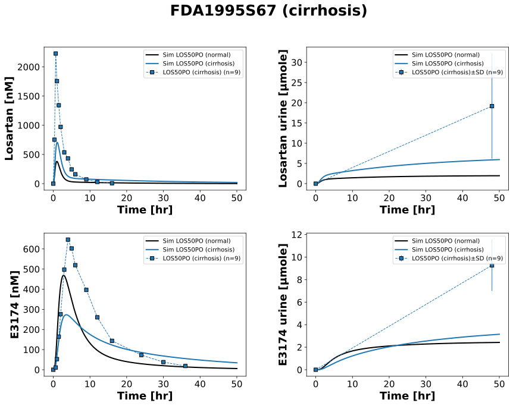
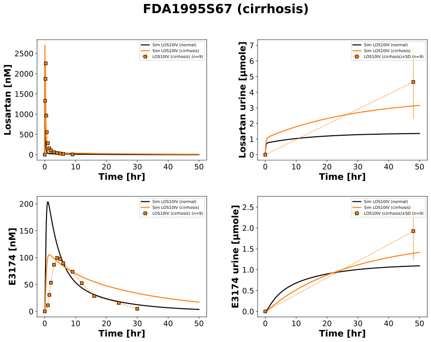
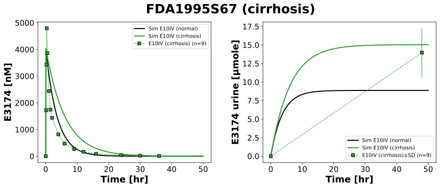

|  |
|  |
|  |
../../../../experiments/studies/fda1995S67.py
from typing import Dict
from sbmlsim.data import DataSet, load_pkdb_dataframe
from sbmlsim.fit import FitMapping, FitData
from sbmlutils.console import console
from pkdb_models.models import losartan
from pkdb_models.models.losartan.experiments.base_experiment import (
LosartanSimulationExperiment,
)
from pkdb_models.models.losartan.experiments.metadata import (
Tissue, Route, Dosing, ApplicationForm, Health,
Fasting, LosartanMappingMetaData, Coadministration, Genotype,
)
from sbmlsim.plot import Axis, Figure
from sbmlsim.simulation import Timecourse, TimecourseSim
from pkdb_models.models.losartan.helpers import run_experiments
class FDA1995S67(LosartanSimulationExperiment):
"""Simulation experiment of FDA1995S67."""
doses = {
"LOS50PO": 50,
"LOS10IV": 10,
"E10IV": 10
}
routes = {
"LOS50PO": "PO",
"LOS10IV": "IV",
"E10IV": "IV",
}
substances = {
"LOS50PO": "los",
"LOS10IV": "los",
"E10IV": "e3174",
}
colors = {
"LOS50PO": "tab:blue",
"LOS10IV": "tab:orange",
"E10IV": "tab:green",
}
interventions = list(doses.keys())
info = {
"[Cve_los]": "losartan",
"Aurine_los": "losartan_urine",
"[Cve_e3174]": "exp3174",
"Aurine_e3174": "exp3174_urine",
}
def datasets(self) -> Dict[str, DataSet]:
dsets = {}
for fig_id in ["Fig1", "Tab1B"]:
df = load_pkdb_dataframe(f"{self.sid}_{fig_id}", data_path=self.data_path)
for label, df_label in df.groupby("label"):
dset = DataSet.from_df(df_label, self.ureg)
# unit conversion to mole/l
if fig_id == "Fig1":
if label.startswith("losartan_"):
dset.unit_conversion("mean", 1 / self.Mr.los)
elif label.startswith("exp3174_"):
dset.unit_conversion("mean", 1 / self.Mr.e3174)
dsets[f"{label}"] = dset
# console.print(dsets)
# console.print(dsets.keys())
return dsets
def simulations(self) -> Dict[str, TimecourseSim]:
Q_ = self.Q_
tcsims = {}
for intervention in self.interventions:
dose = self.doses[intervention]
route = self.routes[intervention]
substance = self.substances[intervention]
#cirrhosis simulation
tcsims[f"{intervention}_cirrhosis"] = TimecourseSim(
[Timecourse(
start=0,
end=50 * 60, # [min]
steps=1000,
changes={
**self.default_changes(),
"BW": Q_(82.3, "kg"),
f"{route}DOSE_{substance}": Q_(dose, "mg"),
"f_cirrhosis": Q_(0.67, "dimensionless"), # FIXME: correct value?
}
)]
)
# normal renal function simulation
tcsims[f"{intervention}_normal"] = TimecourseSim([
Timecourse(
start=0,
end=50 * 60,
steps=1000,
changes={
**self.default_changes(),
"BW": Q_(82.3, "kg"),
f"{route}DOSE_{substance}": Q_(dose, "mg"),
"f_cirrhosis": Q_(0.0, "dimensionless"), # assume 0 for normal
}
)
])
return tcsims
def fit_mappings(self) -> Dict[str, FitMapping]:
mappings = {}
for intervention in self.interventions:
route = self.routes[intervention]
for k, sid in enumerate(self.info):
name = self.info[sid]
if intervention == "E10IV":
if k < 2:
continue
mappings[f"fm_{name}_{intervention}"] = FitMapping(
self,
reference=FitData(
self,
dataset=f"{name}_{intervention}",
xid="time",
yid="mean",
yid_sd="mean_sd" if "urine" in name else None,
count="count",
),
observable=FitData(
self, task=f"task_{intervention}_cirrhosis", xid="time", yid=sid,
),
metadata=LosartanMappingMetaData(
tissue=Tissue.PLASMA,
route=Route.PO if route == "PO" else Route.IV,
application_form=ApplicationForm.TABLET if route == "PO" else ApplicationForm.SOLUTION,
dosing=Dosing.SINGLE,
health=Health.CIRRHOSIS,
fasting=Fasting.FASTED,
coadministration=Coadministration.NONE,
genotype=Genotype.NR,
),
)
#console.print(mappings)
return mappings
def figures(self) -> Dict[str, Figure]:
return {
**self.fig1_tab1(),
}
def fig1_tab1(self) -> Dict[str, Figure]:
figures = {}
for intervention in self.interventions:
if intervention in ["LOS50PO", "LOS10IV"]:
fig = Figure(
experiment=self,
sid=f"Fig1_Tab1_{intervention}",
num_rows=2,
num_cols=2,
name=f"{self.__class__.__name__} (cirrhosis)",
)
plots = fig.create_plots(
xaxis=Axis(self.label_time, unit=self.unit_time), legend=True
)
plots[0].set_yaxis(self.label_los, unit=self.unit_los)
plots[1].set_yaxis(self.label_los_urine, unit=self.unit_los_urine)
plots[2].set_yaxis(self.label_e3174, unit=self.unit_e3174)
plots[3].set_yaxis(self.label_e3174_urine, unit=self.unit_e3174_urine)
elif intervention == "E10IV":
fig = Figure(
experiment=self,
sid=f"Fig1_Tab1_{intervention}",
num_rows=1,
num_cols=2,
name=f"{self.__class__.__name__} (cirrhosis)",
)
plots = fig.create_plots(
xaxis=Axis(self.label_time, unit=self.unit_time), legend=True
)
plots[0].set_yaxis(self.label_e3174, unit=self.unit_e3174)
plots[1].set_yaxis(self.label_e3174_urine, unit=self.unit_e3174_urine)
for k, sid in enumerate(self.info):
name = self.info[sid]
if intervention == "E10IV":
if k < 2:
continue
kp = k - 2
else:
kp = k
# simulation
for state in ["normal", "cirrhosis"]:
# set color: black for normal, colored for cirrhosis
if state == "normal":
sim_color = "black"
else:
sim_color = self.colors[intervention]
plots[kp].add_data(
task=f"task_{intervention}_{state}",
xid="time",
yid=sid,
label=f"Sim {intervention} ({state})",
color=sim_color
)
# data
plots[kp].add_data(
dataset=f"{name}_{intervention}",
xid="time",
yid="mean",
yid_sd="mean_sd" if "urine" in name else None,
count="count",
label=f"{intervention} (cirrhosis)",
color=self.colors[f"{intervention}"]
)
figures[fig.sid] = fig
return figures
if __name__ == "__main__":
out = losartan.RESULTS_PATH_SIMULATION / FDA1995S67.__name__
out.mkdir(parents=True, exist_ok=True)
run_experiments(FDA1995S67, output_dir=FDA1995S67.__name__)
{kind=link}
{kind=link}
{kind=link}